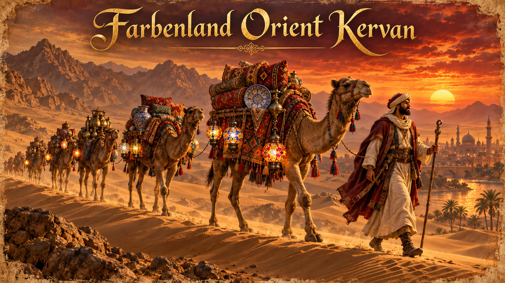
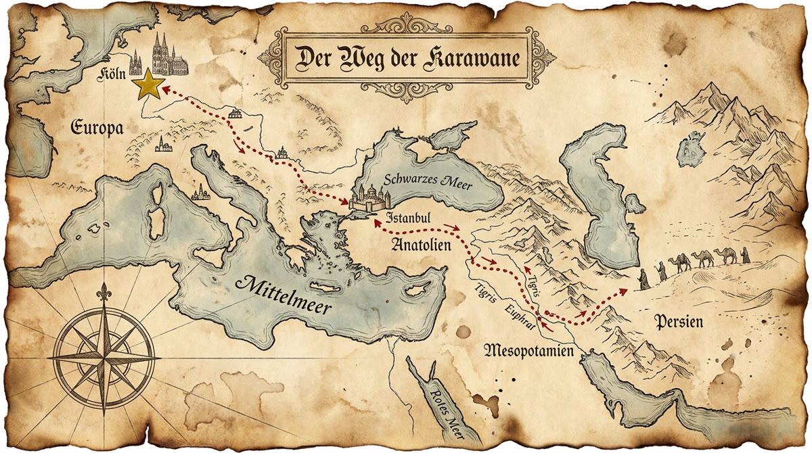
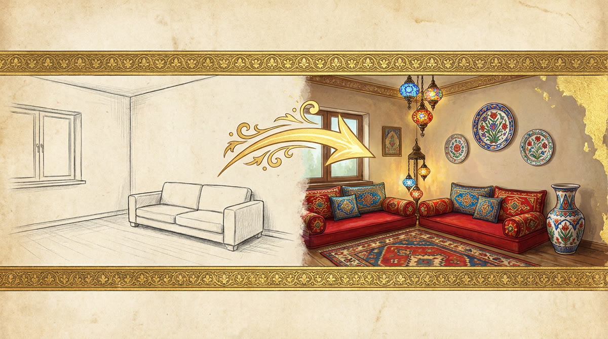

✦ ✦ ✦
Das Buch der Mosaiklampe
Blättern Sie durch die Geschichte eines Lichts – vom Wüstensand bis zum Leuchten in Ihrem Zuhause.

Seit Jahrhunderten tragen Karawanen die Schätze des Orients über Wüsten und Berge. Heute führt ihr Weg zu uns nach Köln – jedes Stück von Hand gemacht, jedes ein Unikat.
Blättern Sie durch die Geschichte eines Lichts – vom Wüstensand bis zum Leuchten in Ihrem Zuhause.
Unser Katalog endet nie: Mit jeder neuen Reise kommen neue Kapitel dazu. Tippen Sie auf ein Stück, um seine Geschichte zu lesen.

Aus Persien zogen Händler durch Mesopotamien, die Wiege der Kultur, nach Anatolien. In den Karawansereien der Seldschuken rasteten sie, tauschten Seide, Keramik und Teppiche. Über Istanbul gelangten die Schätze nach Europa – und heute bringt unsere Karawane sie direkt zu Ihnen nach Köln.
Laden Sie ein Foto oder Video Ihres Zimmers hoch. Wir richten es mit Sitzecke, Mosaiklampen, Kelims und Keramik ein und schicken Ihnen einen Vorschlag.
